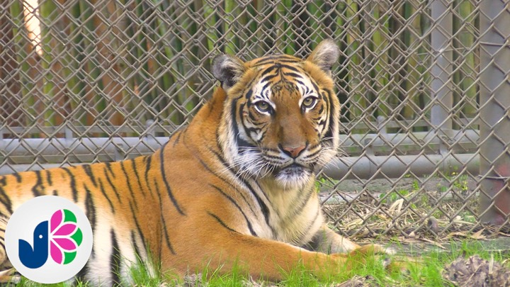

Informational
Informational video projects and storytelling-based pieces.
Jacksonville Zoo - Malayan Tiger Video

This video was created for the Jacksonville Zoo Video Competition.
A small group and I had the chance to film Malayan Tigers
on-location and interview their caretakers face-to-face. It was a
wonderful opportunity to experience the more professional side of
video production, creating a video for a client. This video was played
at the Jacksonville Zoo VyStar Skyscape for six months following its
reveal.
COVID Documentary - The COVID Chronicle
This 10 minute documentary was created for the UNF Scholastic
Video/Film Contest. We discussed the impact of COVID on the school
system and learning throughout the pandemic, both during and after the
COVID pandemic. Additionally, we interviewed several students and
teachers about their experiences and thoughts on COVID's impact.
CHS Digital Media Academy Video-Strand
This Video-Strand was made as a replacement for the out-of-date CHS
Academy video for the Digital Media Academy. We conducted several
interviews where Academy Ambassadors discussed the benefits and
opportunities students would receive and experience should they join
the academy, including several certifications (Adobe After Effects,
Photoshop, Etc.). This Video-Strand was published to the
Creekside Academy Webpage
as a compilation of several Video-Strands.
CHS Financial Technology Academy Video-Strand
This Video-Strand was made as a replacement for the out-of-date CHS
Academy video for the Financial Technology Academy. We conducted
several interviews where Academy Ambassadors discussed the benefits
and opportunities students would receive and experience should they
join the academy, including several certifications (Intuit
Bookkeeping, ESB Entrepreneurship, Etc.). This Video-Strand was
published to the
Creekside Academy Webpage
as a compilation of several Video-Strands.